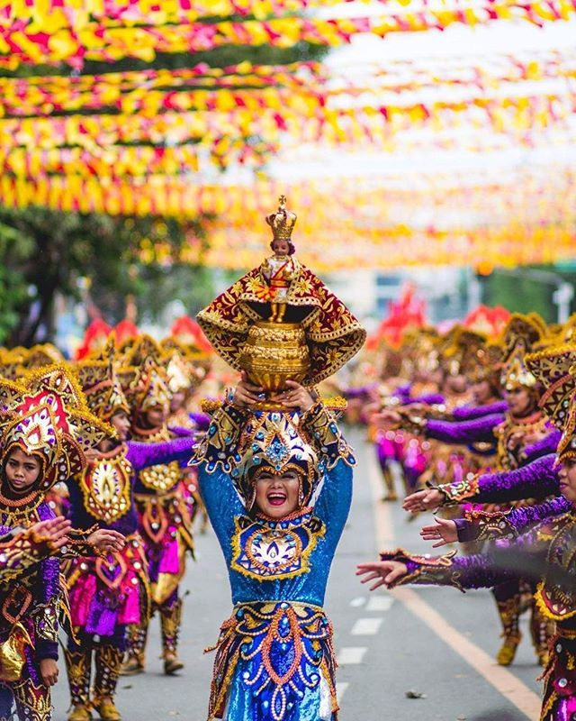
Sinulog Festival
Cebu City’s grand street dancing and religious event for Santo Niño.
Read More
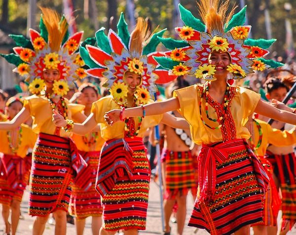
Panagbenga Festival
Baguio’s blooming flower floats and cultural street parades.
Read More
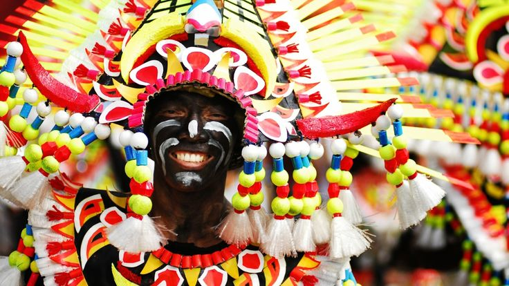
Ati-Atihan Festival
Kalibo’s tribal dance, body paint, and Santo Niño devotion.
Read More
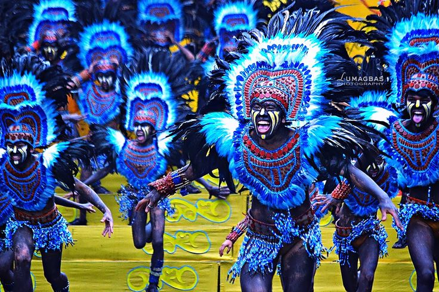
Dinagyang Festival
Iloilo’s vibrant Santo Niño street party and warrior performances.
Read More
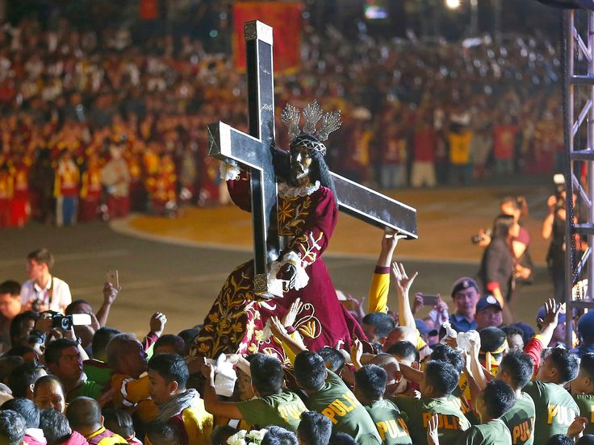
Black Nazarene Procession
Massive religious procession in Quiapo, Manila each January 9.
Read More
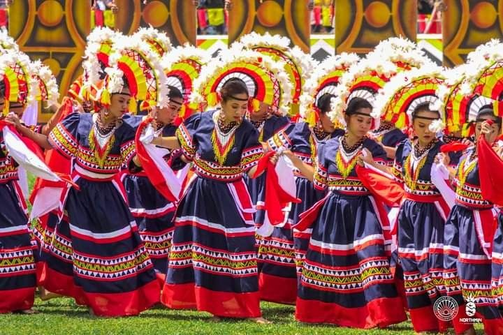
Kaamulan Festival
Celebration of Bukidnon’s indigenous tribes and cultural unity.
Read More
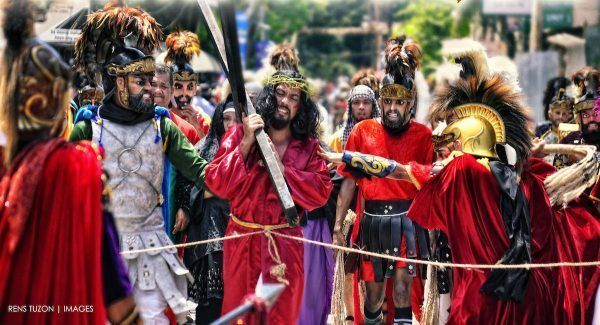
Moriones Festival
Marinduque’s Holy Week with Roman centurion reenactments.
Read More
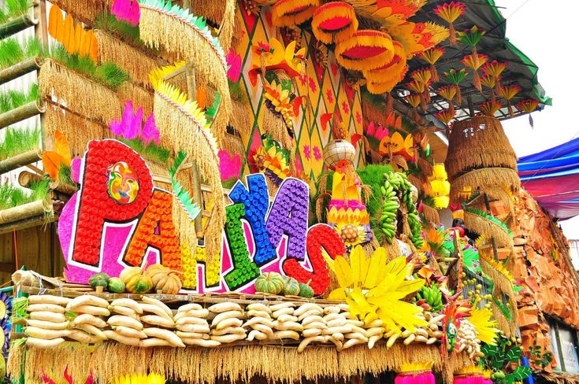
Pahiyas Festival
Colorful harvest décor and food displays in Lucban, Quezon.
Read More
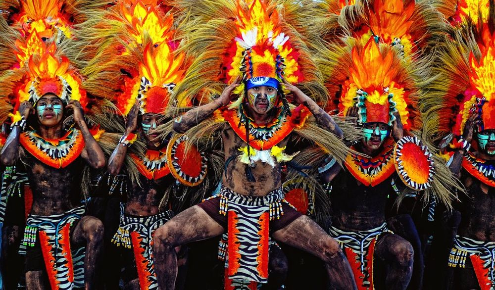
Obando Fertility Rites
Dance ritual in Bulacan for blessings of fertility and love.
Read More
Parada ng Lechon
Decorated roasted pig parade and fiesta in Batangas.
Read More
Sandugo Festival
Bohol’s re-enactment of the historic blood compact.
Read More
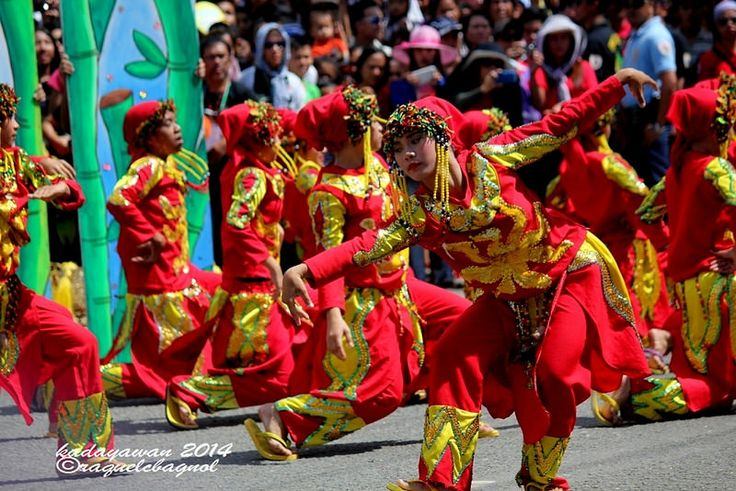
Kadayawan Festival
Davao’s thanksgiving to nature, tribes, and prosperity.
Read More
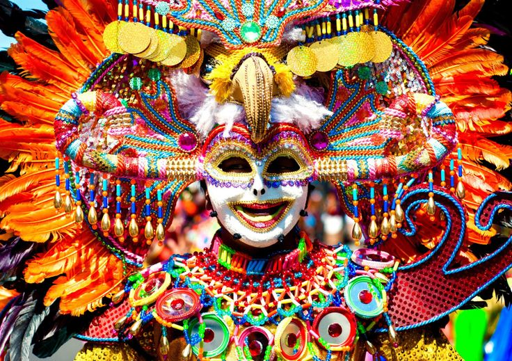
MassKara Festival
Bacolod’s mask-filled street party full of smiles and dances.
Read More
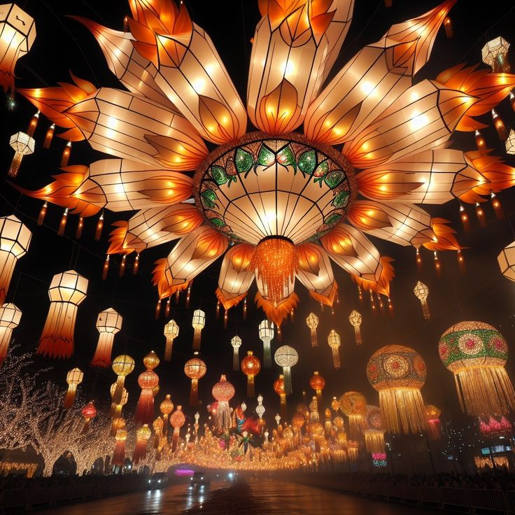
Giant Lantern Festival
Pampanga’s December tradition of massive, glowing lanterns.
Read More